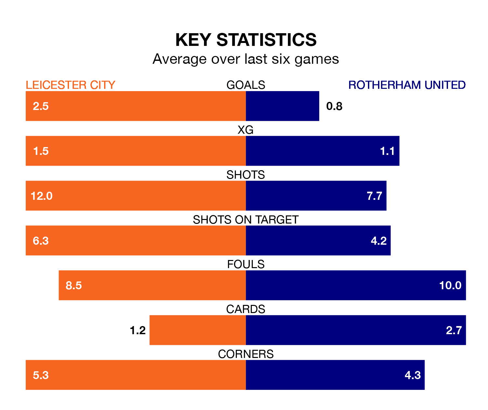

Mid-season relegation candidates Rotherham United face a challenge away against high-flying Leicester City at the King Power Stadium on Saturday.
Rotherham United are rooted to the bottom of the Championship table, and have picked up just two wins and seven draws in their 22 games to date.
The Foxes, meanwhile, are top of the standings with 55 points, having won 18 and drawn one.
With 44 goals in 22 games so far this season, Leicester are the league's second-highest scorers with 2.0 goals per game. And they are conceding fewer than average, letting in 16 goals at a rate of 0.7 per game.
Rotherham, meanwhile, are below average scorers, with 0.9 goals per game, compared to a league average of 1.4. They have conceded 2.0 goals per game.
City are in fantastic form in the Championship, with five wins and a draw from their last six games.
With no wins and two draws over that period, United's form is much worse – they have taken two points from 18, compared to the Foxes' 16.
With Mads Hermansen between the sticks, the hosts can rely on one of the league's safest pair of hands. He has kept seven clean sheets in his 21 appearances this season, and only one other 'keeper – West Bromwich Albion's Alex Palmer – has been able to prevent the opposition scoring on more occasions in the Championship.
In the Millers' net, Viktor Johansson has two clean sheets in 22 games. He has conceded a goal every 54 minutes, more than twice as often as the 135 minutes between goals for Hermansen.
Leicester's last match was on Monday, a 3-2 win against Birmingham City, with Stephy Mavididi (two) and Kiernan Dewsbury-Hall getting the goals for the Foxes.
Rotherham lost 3-2 against Plymouth Argyle last time out, on December 16, with Jamie Lindsay and Tom Eaves on the scoresheet.
Saturday's match will be refereed by Darren Bond, who has taken charge of five Championship games so far this season, issuing no red cards and booking 23 players. He has awarded two penalties.
The last Leicester game Bond refereed was a 2-1 home win against Coventry City on August 6. He is yet to oversee a match featuring Rotherham this season.
Updated: 12:43, 20/12/23